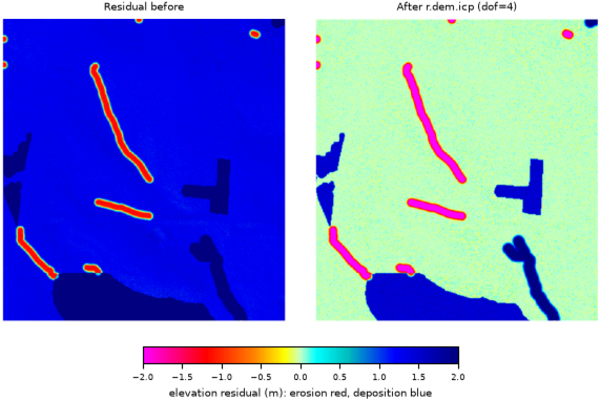

DESCRIPTION
r.dem.icp performs constrained-rigid (4-DoF) co-registration of two
DEM rasters, with an experimental full 6-DoF mode, aligning a source DEM
to a reference DEM with an Iterative Closest Point (ICP) solver. Key
properties of the implementation:
- Point-to-plane ICP with projective correspondences (the target DEM is
sampled at the transformed (x, y) location).
- Multiscale, coarse-to-fine alignment via an adjustable sampling
stride.
- Trimmed ICP (keep the best residual fraction) with Huber robust
weighting.
- OpenMP parallelization of the main loops.
- DEM-specific handling: surface normals from DEM gradients, an optional
slope limit, and an optional stable-terrain mask.
NOTES
- Initialization: If you already know an approximate horizontal shift
or yaw (for example from metadata or phase correlation), pass it via the
init_dx, init_dy, init_dz, and init_yaw options. A
good init_dz is often the median of
source - reference over
stable terrain. In the experimental 6-DoF mode, init_roll and
init_pitch (degrees) additionally seed the roll and pitch angles; they
are ignored with dof=4.
- Speed knobs: Increase stride and reduce levels for
quick tests, and relax max_iterations.
- Robustness: Use a conservative trim
(
0.6-0.9). Where there is a lot of real change
(landslides, forest canopy), lower trim and/or huber.
- Constraints: 4-DoF (
dof=4) is the supported mode and
usually suffices (e.g., airborne photogrammetry vs LiDAR). The four solved
parameters are the three translations plus yaw (planimetric rotation about the
vertical axis), which absorbs residual georeferencing rotation; roll and pitch
are deliberately excluded. 6-DoF (dof=6) is experimental:
rigid roll/pitch rotation is ill-conditioned for height-field DEMs and its
resample is approximate, so leave it off unless you specifically need to model
tilt. The residual that typically remains after 4-DoF is a sub-pixel
horizontal shift and vertical offset; remove it by running
r.dem.nk (Nuth & Kaeaeb) after
ICP.
- Validation: After alignment, inspect the residual DoD and the stats
file; residual bias should be near zero on stable terrain.
EXAMPLES
The commands below use the example scene built in the
r.dem toolset manual, which is derived from the North
Carolina sample dataset. Build it there first.
Align the misregistered surface with four degrees of freedom, which solves
three translations and yaw:
g.region raster=elev_lid792_1m
r.dem.icp source=dsm_offset reference=elev_lid792_1m \
mask=stable_terrain output=dsm_icp dof=4 \
transform_out=icp_transform.txt stats_out=icp_stats.csv
The reported transform is the one that maps the source onto the reference,
so its signs are opposite to those of r.dem.nk. Against an applied offset
of 0.4596 m east, 0.4596 m north, and 1.32 m up it returns:
tx=-0.4590844708
ty=-0.4608043693
tz=-1.3201388046
yaw=0.0000935114

Figure: Stable-terrain residual before and after r.dem.icp at dof=4.
REFERENCES
- ICP framework (point-to-point origin). Besl, P.J. and McKay, N.D.
(1992). A method for registration of 3-D shapes. IEEE Transactions on
Pattern Analysis and Machine Intelligence, 14(2), 239-256.
doi:10.1109/34.121791
- Point-to-plane error metric (minimized here). Chen, Y. and Medioni,
G. (1992). Object modelling by registration of multiple range images. Image
and Vision Computing, 10(3), 145-155.
doi:10.1016/0262-8856(92)90066-C
- Projective correspondences (target sampled at the transformed x, y).
Blais, G. and Levine, M.D. (1995). Registering multiview range data to create 3D
computer objects. IEEE Transactions on Pattern Analysis and Machine
Intelligence, 17(8), 820-824.
doi:10.1109/34.400574
- Efficient ICP variants (sampling, rejection, coarse-to-fine).
Rusinkiewicz, S. and Levoy, M. (2001). Efficient variants of the ICP algorithm.
Proceedings Third International Conference on 3-D Digital Imaging and
Modeling (3DIM), 145-152.
doi:10.1109/IM.2001.924423
- Linearized least-squares point-to-plane solve. Low, K.-L. (2004).
Linear least-squares optimization for point-to-plane ICP surface registration.
Technical Report TR04-004, Department of Computer Science, University of North
Carolina at Chapel Hill.
PDF
- Trimmed ICP (robust to partial overlap and change). Chetverikov, D.,
Stepanov, D. and Krsek, P. (2005). Robust Euclidean alignment of 3D point sets:
the trimmed iterative closest point algorithm. Image and Vision
Computing, 23(3), 299-309.
doi:10.1016/j.imavis.2004.05.007
- Robust M-estimator weighting. Huber, P.J. (1964). Robust estimation
of a location parameter. The Annals of Mathematical Statistics, 35(1),
73-101.
doi:10.1214/aoms/1177703732
- Convergence analysis of point-to-plane registration. Pottmann, H.,
Huang, Q.-X., Yang, Y.-L. and Hu, S.-M. (2006). Geometry and convergence
analysis of algorithms for registration of 3D shapes. International Journal
of Computer Vision, 67(3), 277-296.
doi:10.1007/s11263-006-5167-2
Related methods not implemented here: Nuth, C. and Kaeaeb, A. (2011),
The Cryosphere 5:271-290 (aspect/slope vertical-bias coregistration,
provided as r.dem.nk); Segal, A., Haehnel, D.
and Thrun, S. (2009), Generalized-ICP, Robotics: Science and Systems.
SEE ALSO
r.dem,
r.dem.coregister,
r.dem.nk
AUTHORS
Corey T. White, Center for Geospatial Analytics, NC State University
{kind=link}